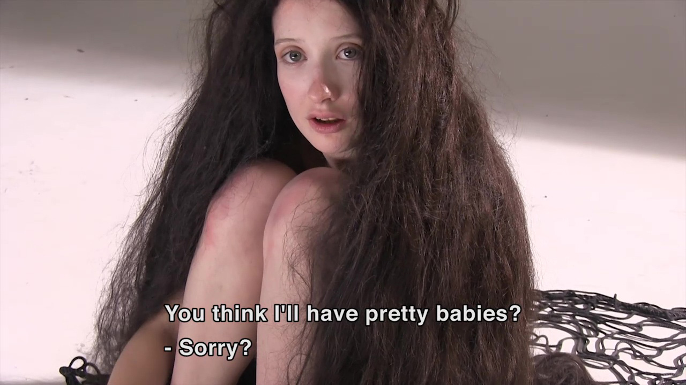

VIDEOASE
ART TALK EPISODE 1 : SASKIA NOOR VAN IMHOF I visit the show of Saskia ANCIENT AMATEURS  This film was tailor made to be shown as an art install in the Stedelijk Museum Amsterdam (the Bureau project space they have). It follows a small group of porn actors in their attempt to make an art film. And in their attempt to make something artistic, they start using strategies that are very similar to what most professional artists do: trying to discover what is 'real' or 'essential' about something and conveying that within the artpiece. In this case, the porn-actors conclude that porn is sort of fake because it isn't about reproduction and creating life and making babies. In order to reconnect to some sort of essence, they make a film in which their pornography does have consequences: Babies are born. The dramatic aspect is that every baby seems to be immediately trapped into a rigourous life circle. Once a baby is born, it is immediately impregnated in order to reproduce and die. The film shows 2 life cycles and one dying event. But it is also at the same time a making-of documentary. |
| ART TALK EPISODE 1 : SASKIA NOOR VAN IMHOF |
|
ART TALK EP 1: ARTIST: SASKIA NOOR VAN IMHOF LOCATION: DE APPEL AMSTERDAM |
|
SASKIA NOOR VAN IMHOF
|